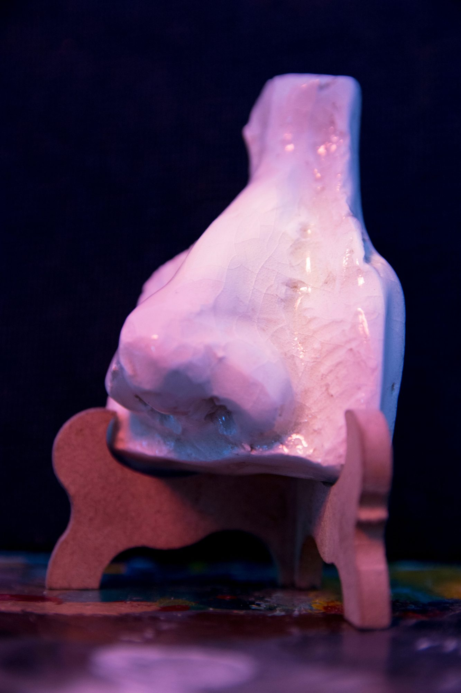
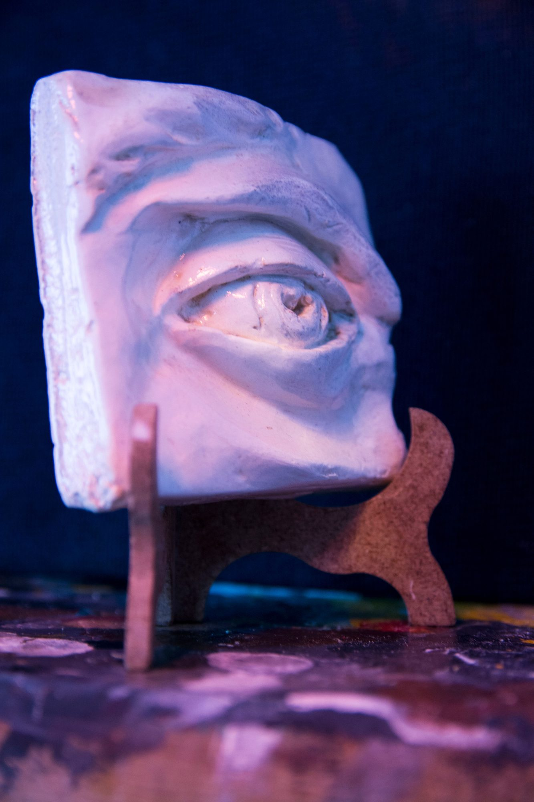
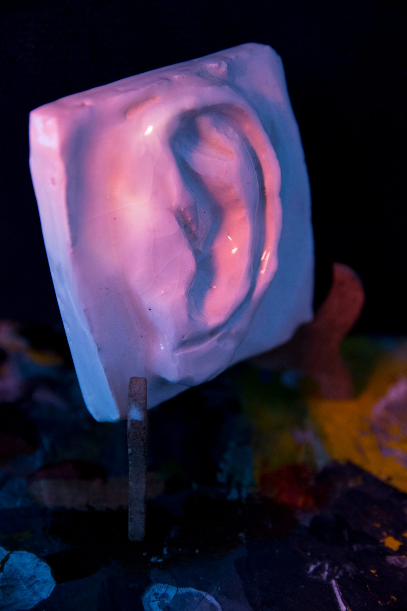
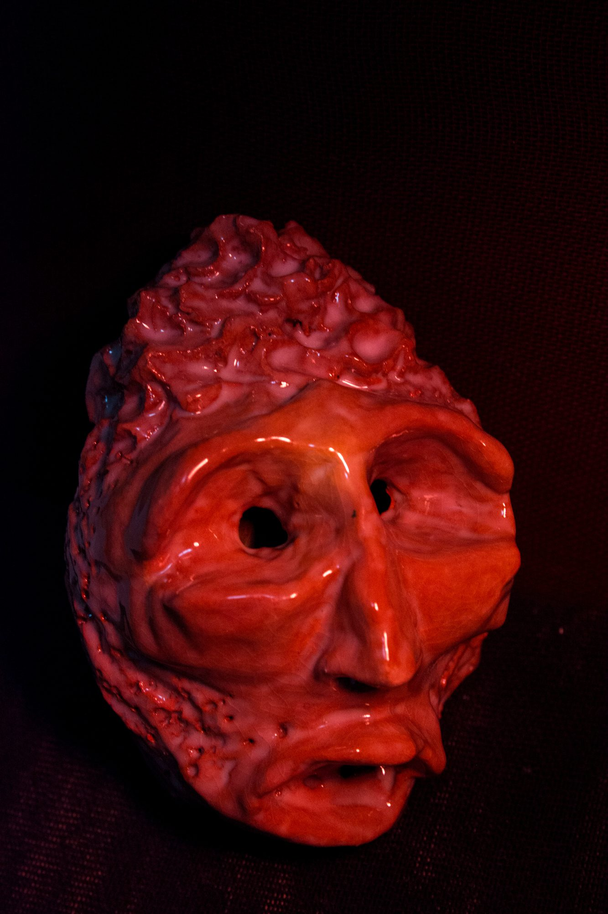
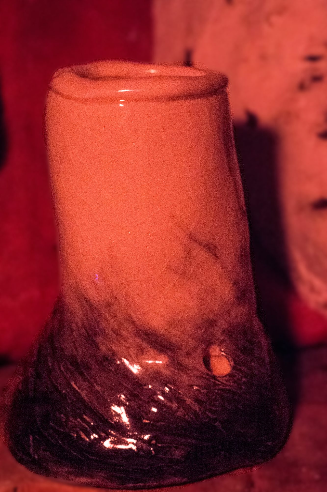
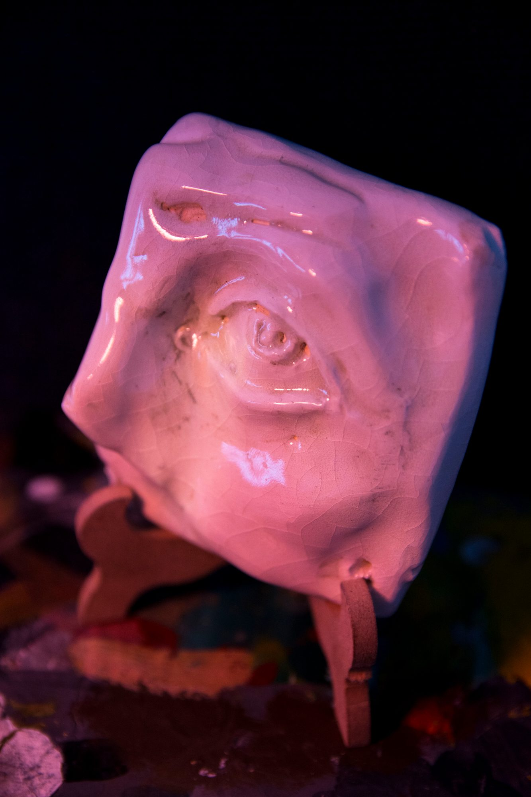
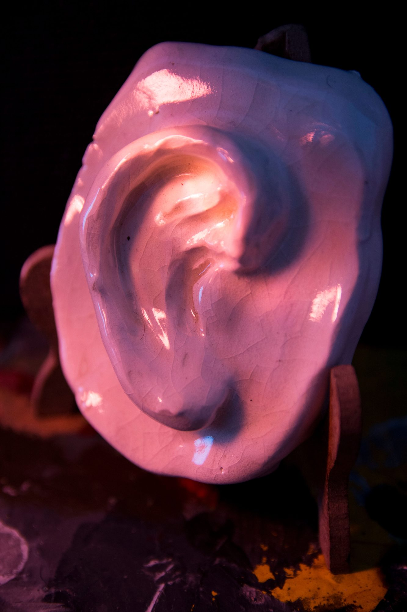
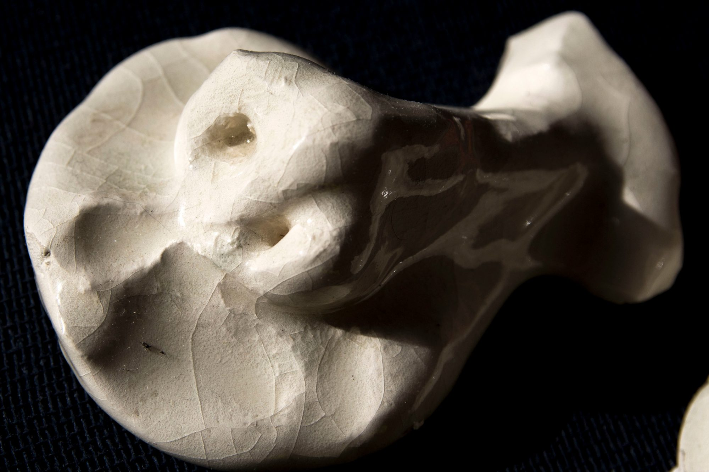

03
Cerámica
Esculturas modeladas en pasta cerámica, esmaltadas y horneadas en horno cerámico. Estas piezas fueron trabajadas en la Universidad Autónoma de Querétaro en el año 2019. La expresión física propia y los rasgos característicos funcionaron como inspiración para estas piezas, creando un diálogo entre la materia, el artista y lo que pretende ser.
















